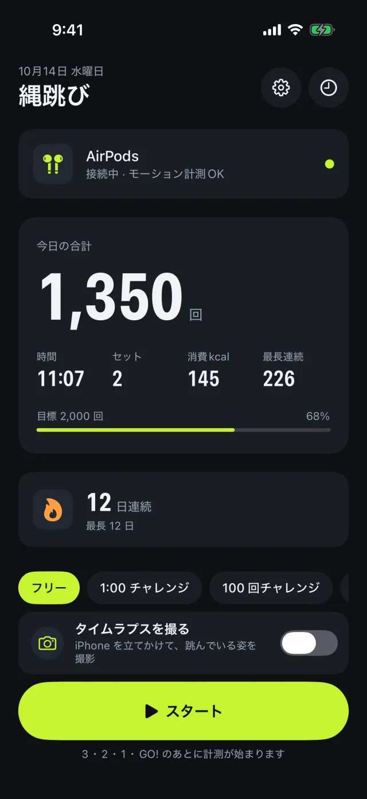
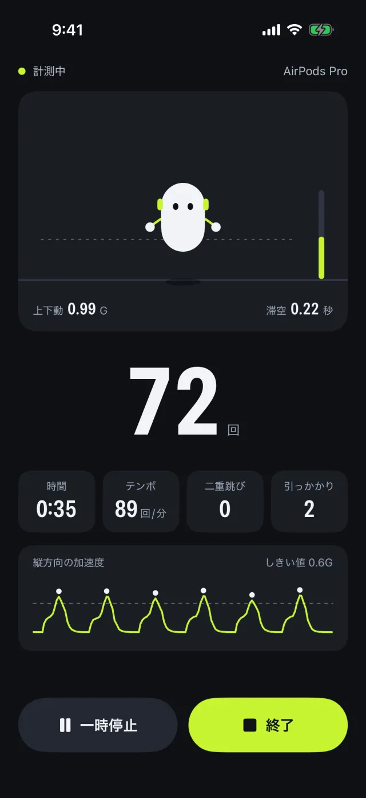
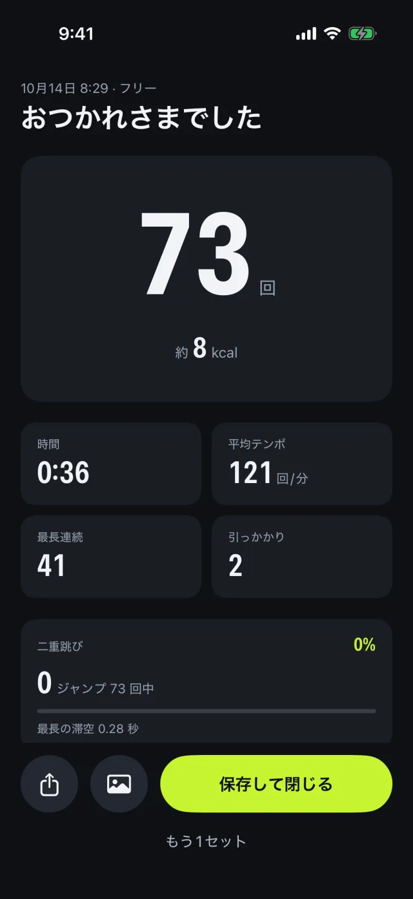
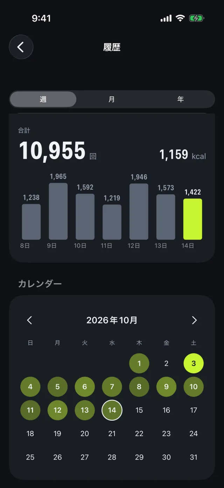
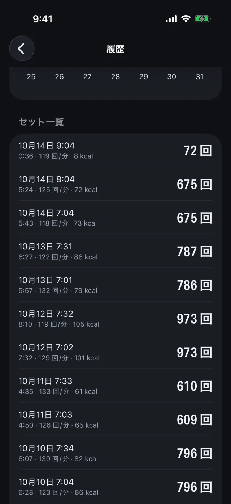

自動カウント
手ぶらで正確に。
- 二重跳びと引っかかりを検出
- 跳び方に合わせて検出を自動調整
- 跳んだ高さに合わせて跳ねるアバター
Nawatob! は頭の上下の動きから、縄跳びの回数を 1 回ずつ数えます。iPhone を手に持つ必要も、腕に巻く必要もありません。テンポや消費カロリー、毎日の連続記録も自動で残ります。
買い切り・サブスクなし・広告なし
数えるのは、AirPods Pro にもともと入っているモーションセンサーです。
AirPods Pro、AirPods Max、AirPods（第3世代以降）を iPhone につなぎます。
「3, 2, 1, GO!」のカウントダウンで開始。iPhone はどこに置いても大丈夫です。
頭の動きから 1 回ずつカウント。回数は AirPods から読み上げます。
5 分だけの縄跳びからインターバルトレーニングまで。数えるのは Nawatob! に任せて、跳ぶことに集中できます。
手ぶらで正確に。
目標を決めて、すぐスタート。
積み重ねが目に見える。
毎日の習慣に溶け込む。





記録は端末と、あなた自身の iCloud にだけ保存されます。アカウント登録なし、広告なし、アクセス解析なし。開発者はデータを一切収集しません。
ヘッドフォンのモーションに対応した AirPods（AirPods Pro、AirPods Max、AirPods（第3世代以降）など）で使えます。心拍数の表示は AirPods Pro 3 が必要です。
iOS 26.0 以降の iPhone と、対応する AirPods が必要です。
ありません。Nawatob! は買い切りで、サブスクリプション・アプリ内課金・広告はありません。
設定の「跳び方に合わせて自動で調整」で、普通に 10 回・二重跳びを 5 回跳ぶと、跳び方に合わせて検出を調整します。ほかの質問はサポートページをご覧ください。
App Store で配信中（日本語・英語）。